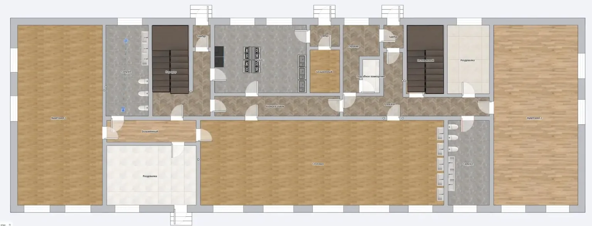
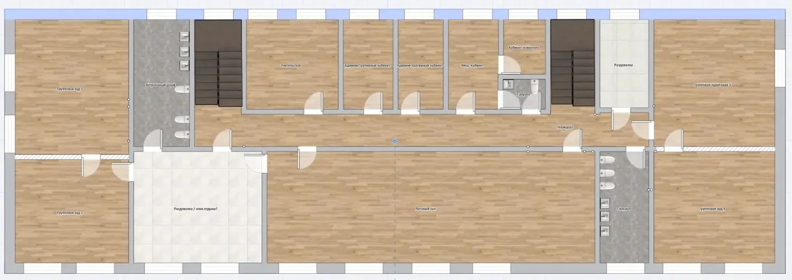
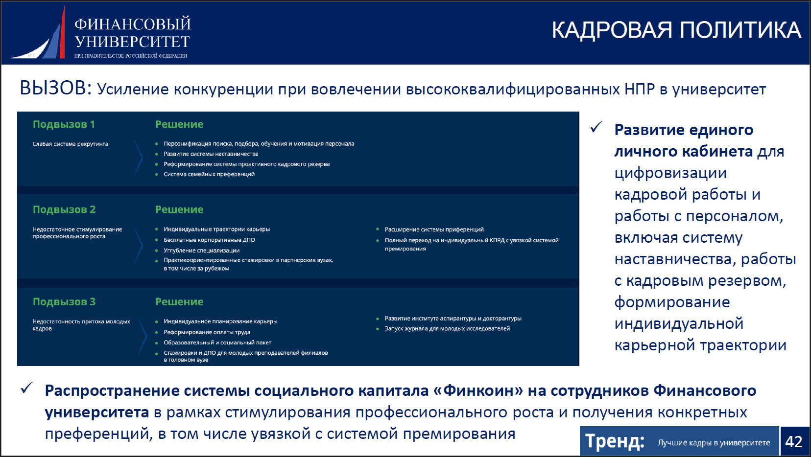

Будущая школьная среда — концепция AКонцепт / рендерОткрыть оригинал ↗
Файлы взяты из связанного репозитория LFU. Реальные фотографии, иллюстрации, планы и рендеры обозначены раздельно. Для точной атрибуции смотрите SOURCES.csv.
← К интерактивной презентации




